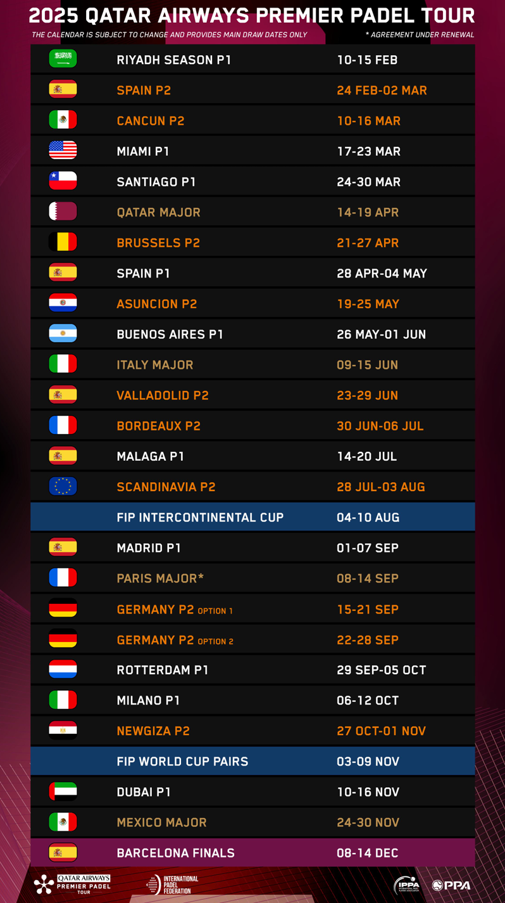

Calendário Premier Padel 2025
Atualização do calendário para 2025 do Qatar Airways Premier Padel Tour

Gijón está prestes a estrear-se como anfitrião da melhor competição de padel do mundo.
A partir de 24 de fevereiro até 2 de março, a cidade receberá o Gijón Premier Padel P2, a segunda passagem do calendário do Qatar Airways Premier Padel Tour 2025 e a primeira em Espanha.
Os bilhetes estarão à venda a 22 de janeiro às 12h00, a partir de 20€, com um preço especial de 7,50€ para as pré-eliminatórias.